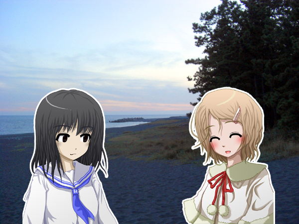
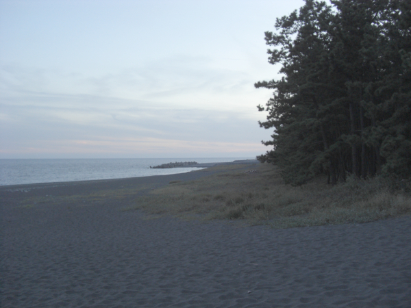

Sitemap
Contents Menu
이전 페이지로
인물소개
인사말
환자
어순
과거, 진행, 완료
부사
계사(be동사)
의문문, 부정문
명령, 의뢰, 금지
대명사
격사(전치사)
관계사
강세와 방언
숫자
접속사, 순사
사생동사, 마치며
 레인 “오늘은 바다에 왔어요! 참 넓다아(^-^) 어……근데 시온 뭐 하는 거니?” 시온 “응……아냐. 레인은 다리가 가늘구나 해서……orz" 레인 “저기요ㅋ” 시온 “그, 그러니까 xion in lein이야. ‘시온은 레인을 보다’. 저번에 했잖아. 아르카는 ‘주어+동사+목적어’라고.” 레인 “그렇지. 그리고 형용사는 동사 뒤라는 거.” 그럼 ‘시온은 레인을 보았다’는 어떻게 말하는 거지. 과거형이네. 영어에서는 동사에 -ed를 붙이는데 아르카에서는 -at를 붙여. 그럼 ‘시온은 레인을 보았다’는 "xion inat lein"이네. 영어처럼 see가 saw로 되나 싶었는데 의외로 간단하네. 예외는 없어? 어디 보자. 모음(a, i, o, e, u)으로 끝나는 동사일 경우 -at 대신 -t를 붙이는 것 정도? 예를 들어 xa(있다)의 경우 모음 a로 끝나니까 t만 붙어서 xat로 ‘있었다’가 돼. 호오, 모음이 연속되는 걸 피한다는 거군. 그 외에도 -at 같은 건 없어? ‘~하고 있다’라는 진행형은 -or를 붙여. axt(쓰다)를 axtor로 하면 ‘쓰고 있다’야. 모음으로 끝나는 동사일 경우에는 -or가 아니라 -r로 하도록 해. 예컨대 ena(울다)면 enar로 ‘울고 있다’. 영어에서는 be writing이니까 -or는 영어랑 안 닮았네. 진행형은 -or……. 그렇다면 완료형도 있을 것 같은데……. 눈치가 빠른걸. 완료형은 -ik를 붙인단다. axtik로 ‘쓰기를 마쳤다’라는 뜻이야. 마찬가지로 모음으로 끝나는 동사에는 -k만 붙이면 돼. 과거형은 -at, 진행형은 -or, 완료형은 -ik구나. 어, 그럼 미래형은 없어? 미래형은 약간 사정이 다르거든~. 그건 다음번에 다루도록 할게.  근데 말야 레인, 이 바다는 어디지? 수……수도 아르나 남쪽에 있는 카테쥬……다옹(´・ω・｀) 시즈X카 현인 거 다 알아ㅋ 이, 이런 건 분위기가 중요하거든!?